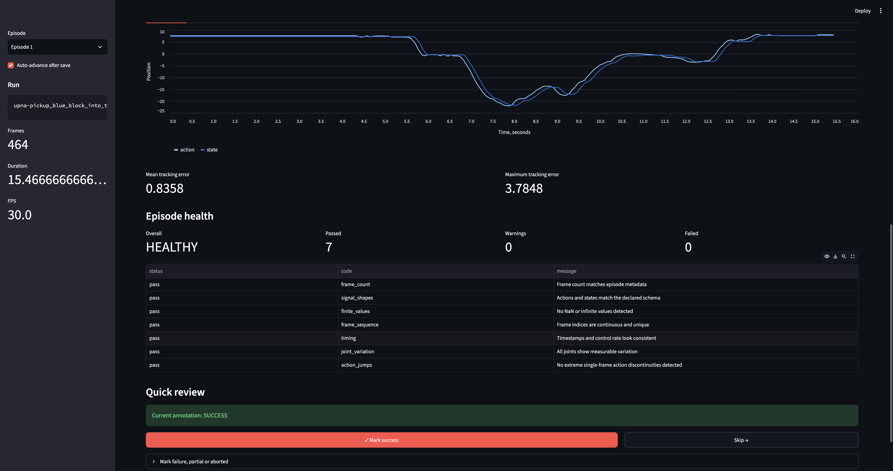

Episode health diagnostics
Detect invalid shapes, non-finite values, timestamp problems, missing frames, frozen joints and extreme action jumps.
RobotBench helps inspect robot-learning datasets and rollouts, detect data problems, review synchronized signals, annotate failures and compare experiments.
Start with LeRobot episode data, validate its integrity, inspect the rollout and save reproducible results.
Detect invalid shapes, non-finite values, timestamp problems, missing frames, frozen joints and extreme action jumps.
Inspect front and wrist video together with actions, states and per-joint tracking error.
Mark successful episodes with one click, add failure details only when needed, and automatically continue to the next episode.
Compare experiment summaries and identify new, resolved, improved or regressed health issues.
Review video and robot signals, confirm the outcome with one click, and move through large episode collections without writing annotation commands manually.

RobotBench currently runs as a Python application with a local Streamlit review interface.
$ uv sync
$ PYTHONPATH=src uv run pytest -q
$ PYTHONPATH=src uv run streamlit run \
src/robotbench/ui/app.pyThe current prototype validates data and supports manual review. The next stages connect experiment configuration, calibration, sensors and hardware telemetry.
RobotBench is being built to distinguish failures caused by data, policy, calibration, sensors and robot hardware.